Problem Statement
A team of two robots (A and B) is attempting to perform a set of tasks in parallel. Each task involves multiple actions such as move to this position, pick up this item, etc. If robot A fails a specific task/action or is significantly slower at performing the task/action than expected (possibly due to errors), how can this failure or error be detected and resolved so that the time taken to complete all of the tasks is still optimized? In the base case, a failure will go unnoticed and the set of tasks for robot A will be compromised. In the case of a robot being slower than expected this could result in missing deadlines or hold up future work that depends on the results of this work. If the error or slowdown is caught in a sufficient amount of time, the error or slowdown can be corrected or mitigated and the set of tasks performed by robot A will still yield positive results. Our goal for this project is to build out the vision systems needed to recognize a robot is erroring in a simple pick and place task.
Abstract
Multi-agent systems in the real world require collaboration between robotic agents in order to effectively accomplish tasks. However, robotic errors can hamper the performance of a multi-agent system. Our hope is to provide a method that allows robots to cross-check the progress of other agents and plan around these failures to ensure the team's successful completion of a set of tasks. For this paper, we focus specifically on the computer vision part of a task where another robot has attempted to pick and place gears and bolts into a bin. The supervising robot must detect what was placed into the bin and determine if the other robot has made an error such as putting the wrong part in, putting too many or too few of a specific part in, or stopped moving entirely. For this task, many approaches were taken including a convolutional neural network and several more classical vision techniques. Also, the supervising robot must be capable of knowing if the robot has errored out and is no longer working to complete the task. In order to recognize this task we investigated two forms of motion detection to determine if the robot has moved over some time period.
Teaser
Robot Task
Robot performing pick and place example task. Our algorithms are deigned to detect errors that a robot might face performing this task. Our error checking algorithms are designed to check the number of parts in the bucket and whether or not the robot is still working on the goal (is moving). If the robot stops moving or does not have enough parts in the bin the system will detect an error. In the future we hope to implement this on a team of robots and adjust the robots plans according to sensed errors.Bin
A picture of the bin that the robot is pick parts fromIntroduction
The goal of this project is to enable robots to monitor each other periodically using computer vision to mitigate the errors that may occur. For example, robot A, while working on completing its own set of tasks, can glance over and observe robot B operating in its workspace and determine if everything is going smoothly or if an intervention of some type is needed.
Our approach is different from most existing approaches to monitoring faults in multi-robot systems [4, 5] as most current approaches do not use vision. By utilizing vision, our system is not dependent on outside factors such as the network connection or internal sensors to influence whether the robots will be able to communicate with each other. Therefore teammates are able to take over tasks and complete overall objectives.
For this project, we are focusing on the computer vision part of the supervising robot’s error detection. This involves determining what the other robot has already placed in the bin and knowing whether the other robot has placed too little or too much of each object. It also uses a motion image to determine if the other robot has stopped moving.
Approach
Several different approaches were used by the supervisory robot to determine what objects were placed in a bin by another robot. These include histogram thresholding, contour counting, probability distributions, and a convolutional neural network. Several methods were also used for motion detection (MHI and gaussian mixture separation model). Finally a dataset of labeled images was created to train our learning algorithms on. This dataset had images of a variety of orientations and scales of various configurations of the bin and parts.
Example image from dataset
A picture of the bin that the robot is pick parts fromData Collection
To aid in the error detection process, data was manually collected in 25 different specific classes. The classes were based on the count of each object in the bin. For example the figure above shows 1 large gear in red, 1 small gear in blue and 2 bolts in grey, therefore the label for this image is “2bolts1big1small.” To collect the data, we recorded video from the Fetch robot’s camera while shaking the green bin to vary the position of the gears and bolts. There was approximately 1 hour of video recorded in total. After converting the video into individual frames, there were approximately 10,000 images in the total dataset with approximately 400 images per class. The advantage of this method is that we can label each image from a specific video with a certain class which minimizes the amount of image labeling required. One note on the classes, the ultimate goal is to determine if the bin has the parts necessary to build a full kit. By initially splitting the data into 25 classes, the option to consolidate into small groups of classes remained such as combining all the images with the large gear to help create a classifier to check for the large gear.
Histogram Thresholding
The first and simplest of the approaches we tested for classifying the items in the bin was a thresholding based approach in this approach we would threshold based on the green of the box and locate the contour of the outside of the box using opencv find contour function. After finding the contour we would remove all of the data outside of the region of the box by setting the pixel values to black. After doing this we would threshold away the green of the box and perform a slight erosion and dilation on the mask to remove any small blobs and to prevent any of the gears/bolts from being removed from the image. Once this was done we would have an image that only contained the gears/bolts. Finally we would threshold themimage containing only the gear/bolts on each of the colors: red, blue and gray and count the numbers of pixels of each color in the image. Using these histograms of colors we would detect the number of gears/bolts by setting ranges on the number of pixels. The exact threshold values were hand tuned to maximize the performance of the classifier on the dataset. This method was tested by measuring its performance on the dataset collected above and qualitatively by running the classifier on webcam images while moving and changing the number of objects in the bin.
Contour Counting
In this method, images were cropped to the boundary of the box, thresholded on green to cut out the back of the box, dilated and eroded to reduce noise, and finally run through a contour detection on the masked image. Finally, the total number of contours detected larger than a set area was used to predict how many screws/bolts were in the box.
Probability Distributions
In this method, images were cropped to the boundary of the box. A percentage of the box that contained each of the three types of objects was computed. Classical computer vision methods, including color thresholding, image segmentation, and edge detection, were used to determine which pixels belonged to each type of object. These three percentages were then computed for each of the labeled images in the dataset to create probability distributions for each of the classes. This classifier uses these probability distributions to predict a class for test images based on the percentage of the box that is each of the three types of objects.
Deep Learning
Convolutional Neural Networks were utilized to classify the images into the 25 different classes which ultimately provides the correct count of each object in the bin. All images were cropped and padded to ensure that the aspect ratio was maintained and the images were the correct size as they were fed into the networks. A few different networks were trained. The first network was trained on the raw images collected. The second network was trained on images cropped to out line of the green bin. The third network trained on images cropped and thresholded on the green background. The fourth used images that were cropped, thresholded and then small blobs that the threshold missed were removed.
Tools
To build, train and test the CNN models, the Keras library with Tensorflow backend was used [Chollet] All training was done on a Windows 10 laptop with 16 GB of RAM and an NVIDIA GeForce 940MX.
Model Design and Parameters
From a high level, the model was custom built with two convolutional layers with max pooling and one dense fully connected layer and a final soft max layer. The convolutional layers contained 32 3x3 filters. This simple architecture was consistent for all the trained networks. Existing model architectures were tested however they would crash due to the limitation of the hardware used. The model pipeline is available below in figure. XXX.The input image size was (128,128,3) and a batch size of 32 was used. This resulted in a network with approximately 3,000,000 trainable parameters. Most of these decisions were made to limit the overall size of the network to work effectively on the available hardware.
A model of the tested network is shown below.

Training
The images were broken into two sets the training and validation sets. The validation set was generated by randomly selecting 10% of the data from each class. This was done for each of the levels of preprocessed images. Each of the four neural networks were trained for approximately 30 epochs. The training was stopped short if the training set accuracy reached 100% accuracy which happened for all data sets around 30 epochs. Figure XXXX shows a sample of the training over the course of 15 epochs.
CNN Accuracy
A sample of training run over 15 epochs on the maximally processed image data set where images were cropped, thresholded and blob removal. Shows the accuracy of the training and test.CNN Loss
A sample of training run over 15 epochs on the maximally processed image data set where images were cropped, thresholded and blob removal. Top shows the calculated loss of the training and test.Motion Detection
In order to detect if the robot has errored and is no longer moving a motion detection system needed to be implemented. In order to do this we tried two different approaches. The first approach was to use a motion history image to measure the change in the frame over time. The second method was to use a motion detection algorithm MOG2 which uses gaussian mixtures to remove the background. Both of these methods were tested empirically using streams of video from a webcam.
Experiment and Results
For each of the classifiers we tested them by measuring there performance on a test set extracted from the dataset. Below you can see the accuracy values and the confusion matrices for all tested classifiers
Results
Data Collection
In order to collect our dataset to train our classifiers we took a video of the container with a group of parts. During the video, we shake the box to allow for the bolts and screws to fall into a variety of positions and orientations. After this, we separate each of the frames of the video into individual images. Since all of the images have the same number and types of parts we can label the entire sequence of images collected in this manner using the same label. After this, we change the number and type of parts in the bin and take another video. We continue doing this until all combinations of parts have been collected. A link too our dataset is in the side panel.
Histogram Thresholding
This method was tested by measuring its performance on the dataset discussed above and qualitatively by running the classifier on webcam images while moving and changing the number of objects in the bin. Below is the confusion matrices of each of the object classes. This method performed very well on both the small and large gears. This is due to the fact that the colors of these objects were easy to threshold out. The bolts however performed poorly. This is due to the fact that gray was difficult to threshold on due to glare. Due to poor thresholding of the color the number of pixels varied wildly and the classifier performed poorly. The accuracies for the large gear, small gear and bolts with this method were calculated and are shown below compared to the baseline of random classification.
 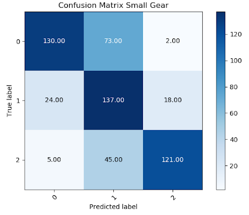
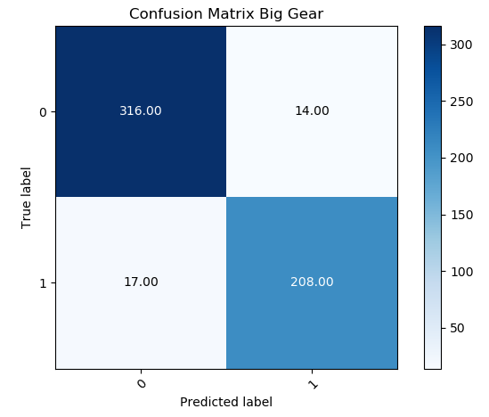
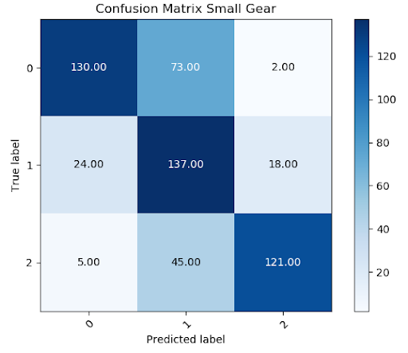
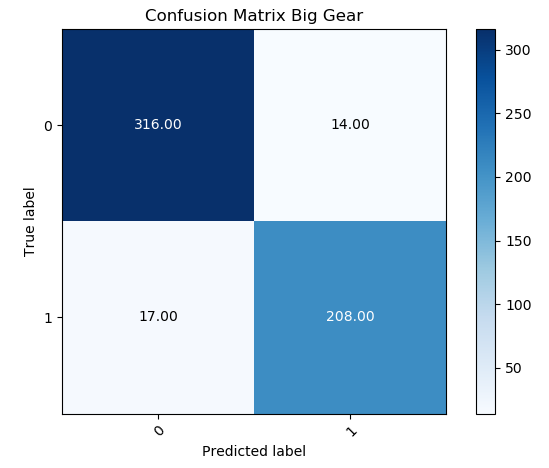
Contour Counting
The tables below shows the confusion matrix for the three different categories. Similar to the other methodologies, we have relatively high accuracies for the big red gear. However, detecting grey bolts still cause a bit of an issue. This is because thresholding the image for grey caused the glare to be included in the image as well.
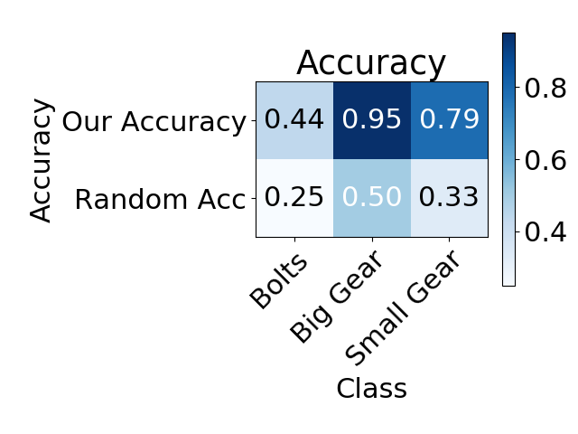 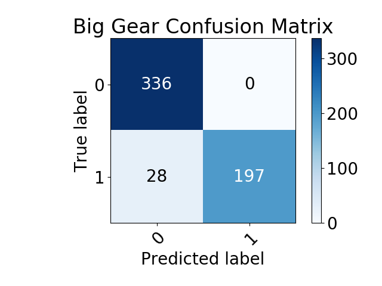 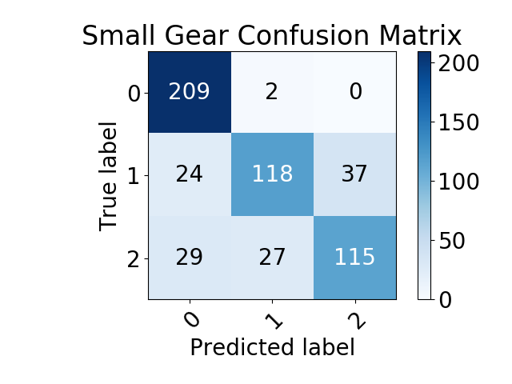 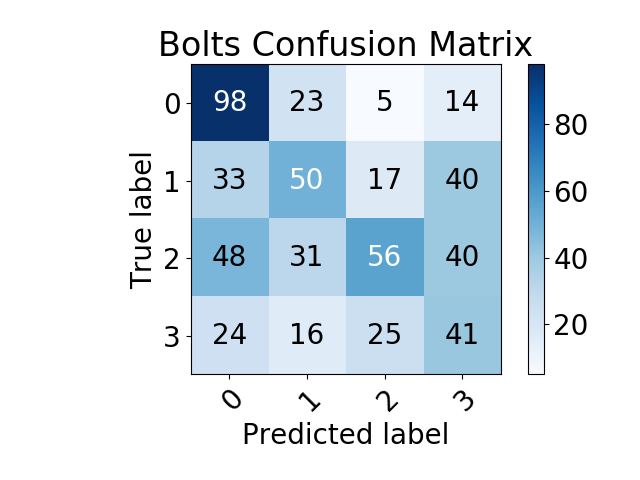Probability Distributions
As shown in the tables below, using probability distributions based on features of the image was pretty successful for counting the number of red and blue gears and had the most success out of the methods tried for determining the number of gray bolts. Below the tables are the probability distributions for each of the objects.
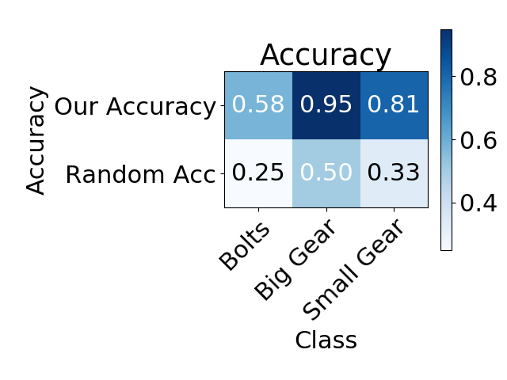 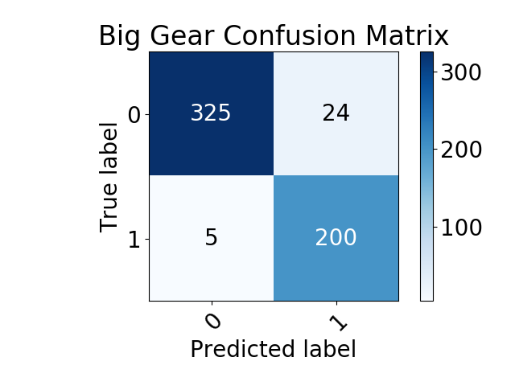 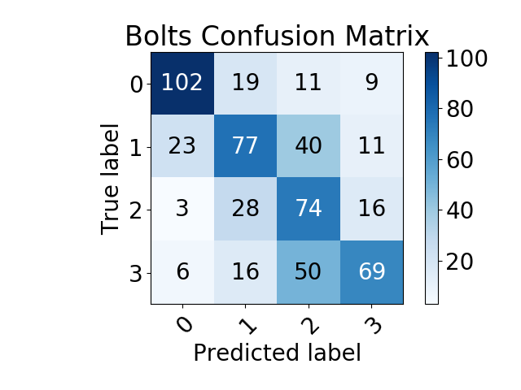 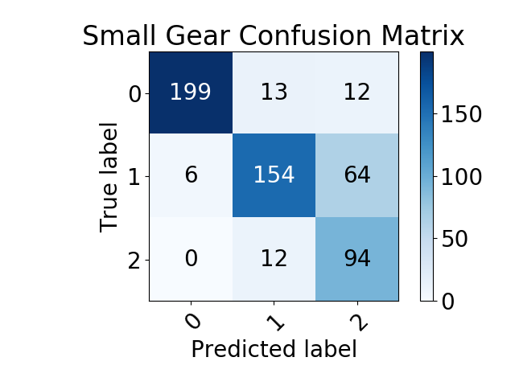 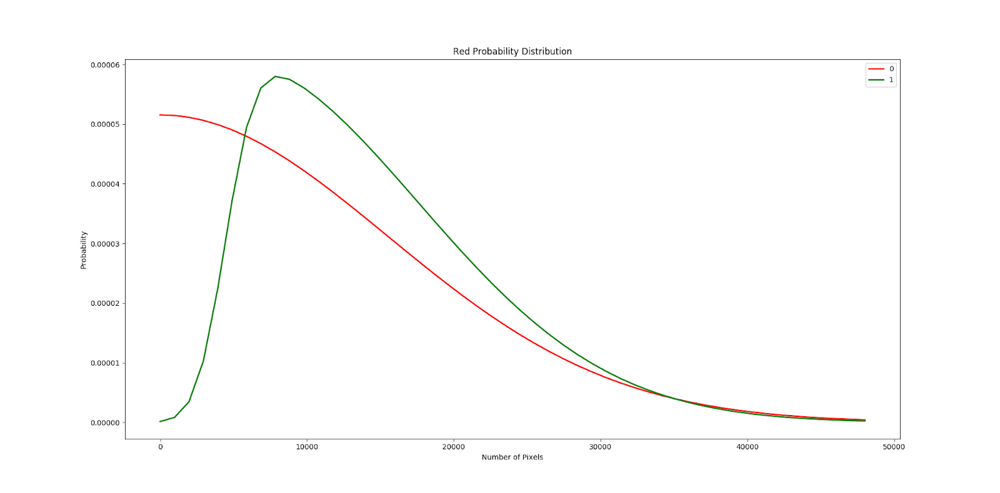 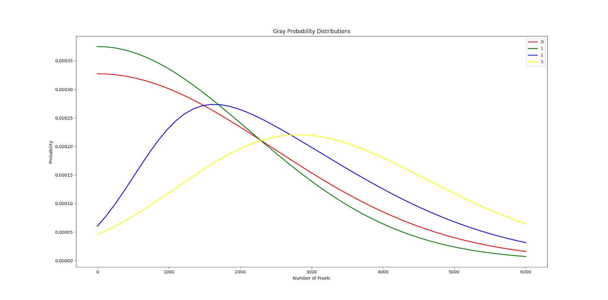
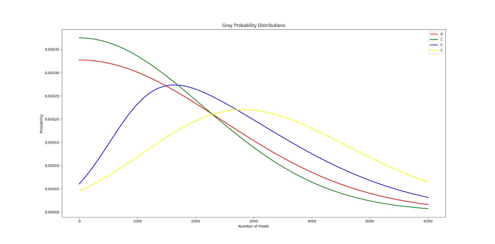
Deep Learning
The table below shows a summary of the validation set accuracies at the end of training. While it is surprising to see that preprocessed images performing so poorly, we believe this is due to the introduction of the random edges resulting from the thresholding process.
Top is the confusion matrix when run against the validation set for the cropped images. It can be seen clearly that it misses a couple classes severely and tends to favor class 21. Bottom is the confusion matrix for the raw images. It shows a nice diagonal correctly classifying most of the matrix.
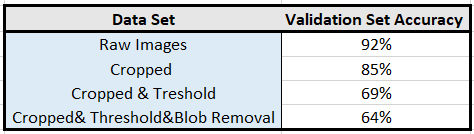 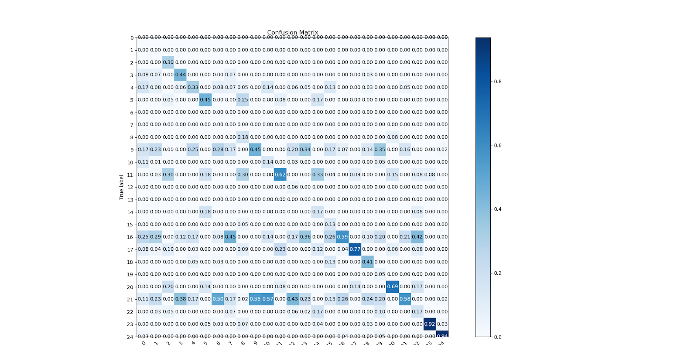 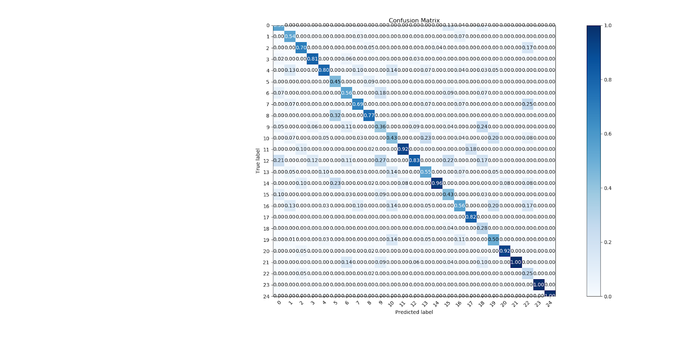Live Inference test
We ran live inference using the model built on the cropped image set using an external web-cam. The inference failed miserably. The classifications did not seem to match the classes at all based on the brief video inference. We were running the inference on each frame independently as it was received into the camera feed. The figures below shows two instances where of these failures.
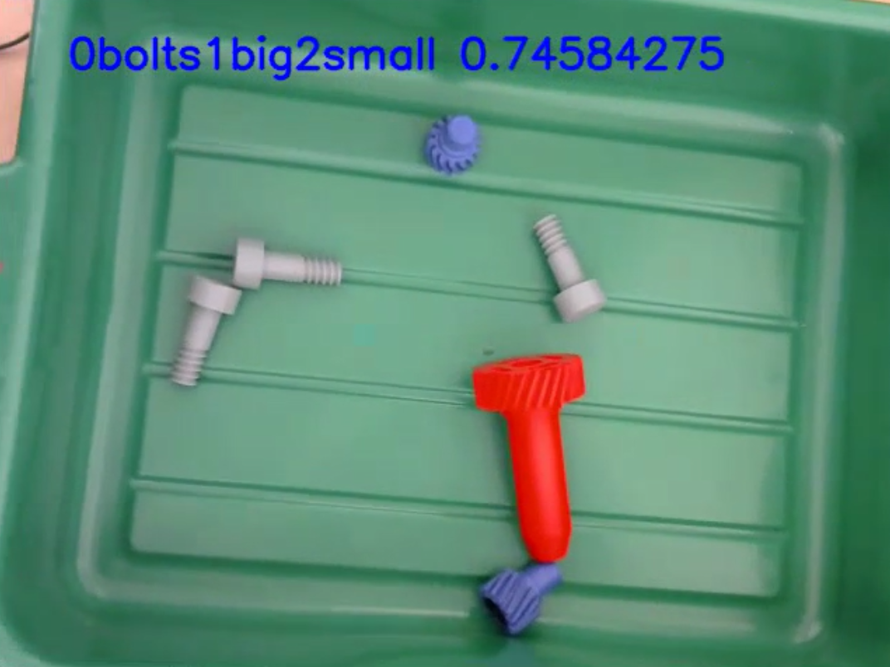 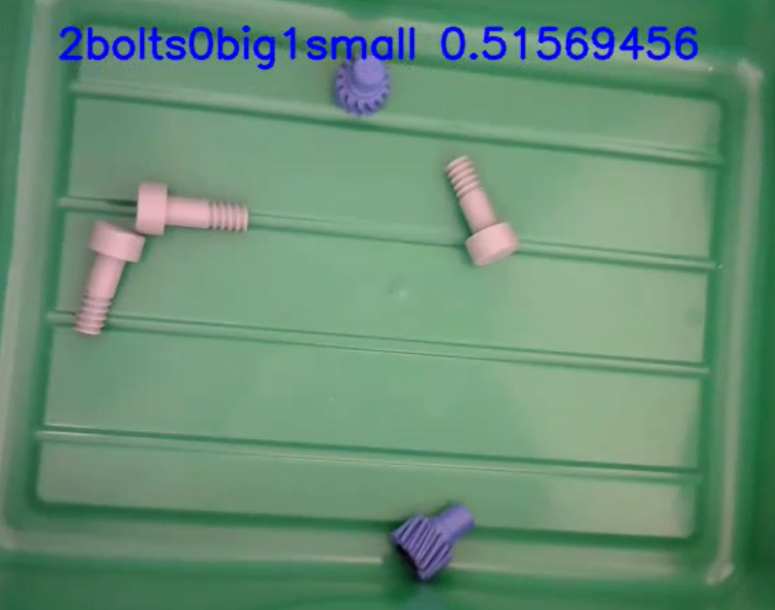Motion Detection
In order to test the results we ran several empirical tests using webcam video stream. The first method tested was the MHI approach. This method performed poorly due to a high amount of noise in the image pixels between frames. Due to the noise this method proved inviable. The second method we looked at was an MOG2 motion detection algorithm that used gaussian mixtures. This method performed very well and was able to very accurately locate all motion in the image. Using this model we were able to create an error checking script where the camera watches the robot and detects motion. If motion has not been detected for a set amount of time the algorithm will say that the robot is in an error state. Below are several pictures that give an understanding of how these algorithms performed.
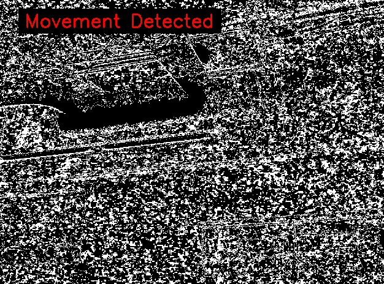 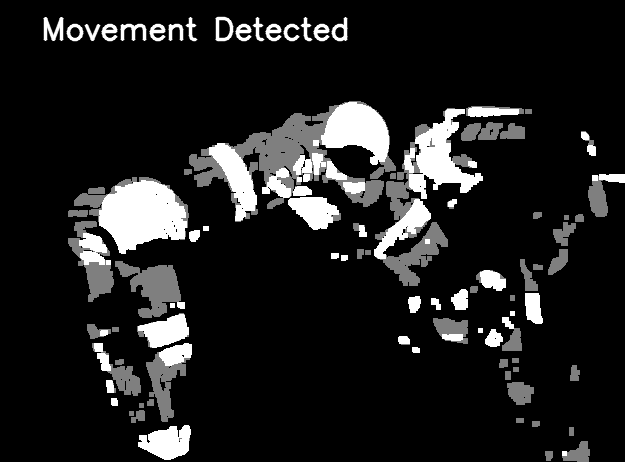 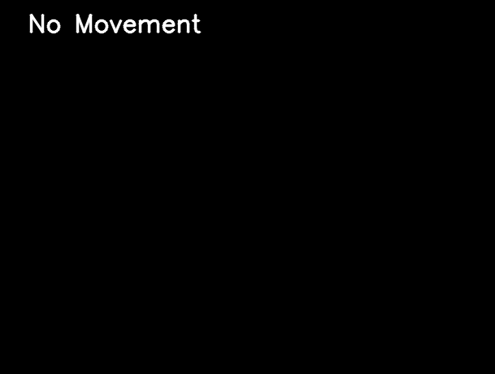Qualitative Results
Histogram Thresholding
Histogram Method Performance
After designing and validating the thresholding method as shown above, we ran the classifier on a webcam while changing the items in the bin to see how well it performed on live images. The results performed similarly to the test set and below are a few pictures of this process.Histogram Method Performance
Here is an example of a test set example we labeled incorrectlyContour Counting
Contour Method Performance
The original imageContour Method Performanc
The mask for red which produces a very clear detection of the red gear.Contour Method Performanc
Thresholding of grey pixels which shows clear interference from the glare on the bottom of the box.Probability Distributions
Probability Distribution Method Performance
This is an image that shows some of the object detection from this classifier. The top left is the red gear, the bottom middle is the gray bolts, and the bottom right is the blue gear. Shown in the bottom middle is an artifact of the glare from the overhead lights that contributed to the reduction in accuracy.Deep Learning
Motion Detection
Motion Detection
Example of the motion detectors output when the robot is moving in frameMotion Detection
Example of the motion detectors output when the robot is in frame but has not moved in a long timeVideos
Below is a collection of videos we shot of our project
Example of Robot Performing a pick and place task
CNN Classifier Video
Conclusion
Due to the fact that results from the experiment are still pending, concluding statements can not be made about the validity of the work. However, if this method is effective, there are several interesting avenues available for future work. If we are able to consistently visually detect errors, we may be able to use this information to modify the robot’s list of possible actions to remove actions that have a higher chance of causing errors. Once modified this new action space could be useful in helping develop a dynamic planning algorithm. Also, if agents are capable of recognizing the errors of other robots in a cluster this information could be used to develop algorithms for decentralized cluster behaviors. Finally work like this could be used to develop error recovery strategies that can allow for autonomous correction of errors that have already occurred.
Conclusion Deep Nets
The CNN classifier network seemed to fail pretty dramatically due to over-fitting. It was able to accurately classify the validation and Test sets very nicely, but failed the live inference. It was likely classifying based on extraneous features that are not obvious to us that happened to be consistent across the images whether it be something in the background or the angle of the green bin.
There are a number of things we would like to have improved about the deep learning approach and would continue on this path if more time were available. Firstly, there are adjustments that can be made to the model such as adding additional convolutional layers or using transfer learning by capturing the pre-trained feature filters from existing datasets and then training the fully connected layers. We were limited by the available hardware, but moving forward we would seek to utilize better hardware that can handle larger memory capacity. These improvements are contingent on increasing the size of the dataset. While we did have approximately 10,000 images, they were not unique images and did not provide enough variety for the model to learn the distinguishing and important features. Lastly, we believe that an entirely different approach using an object detection as opposed to classification would yield better results. Overall, we learned that utilizing deep learning requires a good deal of parameter tuning as well as trial and error to be successful.
Future Work
The results from several of the methods we tried for classify the parts performed poorly (multi-class CNN, binary CNN, and contour counting). We believe that these methods did not perform as well as expected to the size and quality of our data set. The images were too similar and far too few to effectively learn how to count the parts in the bin. Two of the methods that we tried (probabilistic methods and thresholding) did seem to give pretty good results on counting the parts in the bin.
Several further improvements could be made to increase the performance of our classifiers. Improving the dataset to remove blurry or images with occlusion and expand the number of images for each class. These improvements to class we believe would improve the performance of the CNN as well as allow us to further tune the classical methods described above.
Also in future work we hope to implement these systems on teams of robots. Using these methods we could find which actions cause errors most often and modify the action space. Once modified this new action space could be useful in helping develop a dynamic planning algorithm. Also, if agents are capable of recognizing the errors of other robots in a cluster this information could be used to develop algorithms for decentralized cluster behaviors. Finally work like this could be used to develop error recovery strategies that can allow for autonomous correction of errors that have already occurred.
References
[1] Chollet, François. “Keras.” Keras, GitHub, 2015, GitHub.
[2] Banerjee, Siddhartha, et al. "Taking Recoveries to Task: Recovery-Driven Development for Recipe-based Robot Tasks."
[3] Ortenzi, Valerio et al. “Vision-Based Framework to Estimate Robot Configuration and Kinematic Constraints.” IEEE/ASME Transactions on Mechatronics 23 (2018): 2402-2412.
[4] X. Li and L. E. Parker, "Sensor Analysis for Fault Detection in Tightly-Coupled Multi-Robot Team Tasks," Proceedings 2007 IEEE International Conference on Robotics and Automation, Roma, 2007, pp. 3269-3276.
[5] E. Khalastchi and M. Kalech, “Fault Detection and Diagnosis in Multi-Robot Systems: A Survey,” Sensors, vol. 19, no. 18, 2019.
Team
Andrew Messing,
Glen Neville,
Carter Price,
Sean Ye